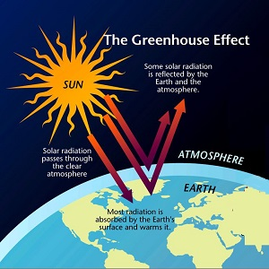
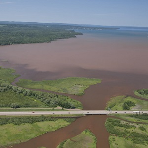
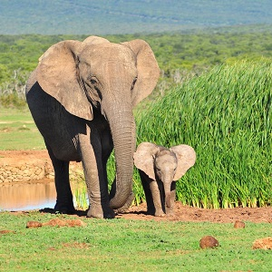
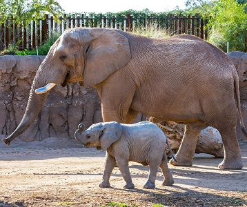
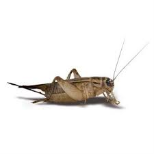
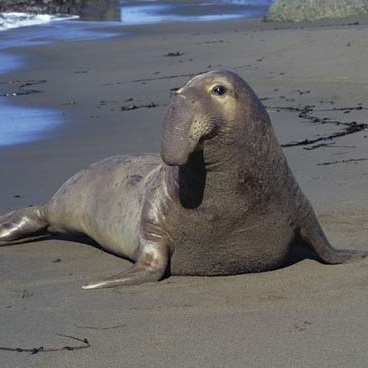
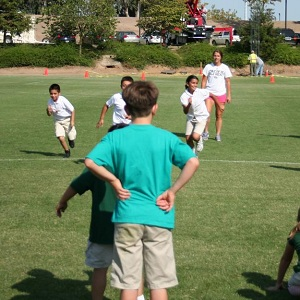
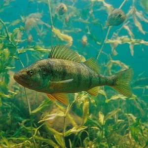

Greenhouse Effect Opinion
 In the General Social Survey (GSS), two questions were asked – “How often do you make a special effort to sort glass or cans or plastic or papers and so on for recycling?” and “In general, do you think that a rise in the world’s temperature caused by the greenhouse effect, is extremely likely, very likely, somewhat likely, not very likely, or not at all likely?”. Both of these variables are recorded in the GSSEnviroQues.csv file. Use these data to answer the questions below.
- What percentage of all respondents recycle often and feel that it is very likely that the greenhouse effect has caused the rise in world’s temperature?
- What percentage of those respondents that recycle often feel that it is very likely that the greenhouse effect has caused the rise in world’s temperature?
- What percentage of those respondents that think it is very likely that the greenhouse effect has caused the rise in world’s temperature also recycle often?
- What percentage of all respondents recycle often?
- What percentage of all respondents think it is very likely that the greenhouse effect has caused the rise in world’s temperature?
North Fish Creek Discharge
 The instantaneous discharge (cubic feet per second) and total suspended sediments (in milligrams per liter) were recorded on 28 dates for North Fish Creek near Ashland, WI. These data are found in FishCrNWaterQuality.csv (data, meta). Describe the relationship between instantaneous discharge and total suspended sediments from these data. [Think carefully about which variable should be on the y-axis.]
Animal Longevity and Gestation
 The average gestation period (i.e., length of pregnancy) of an animal is closely related to its longevity (i.e., length of its lifespan). Scientists are interested in being able to predict the average longevity (difficult to measure) from average gestation period (relatively easy to measure) for a given animal. Towards this end, data on the average gestation period and longevity (in captivity) of 40 different species of animals was recorded in animals.csv (data, meta). Describe the relationship between average longevity and average gestation period from these data. [Think carefully about which variable should be on the y-axis.]
Animal Types in Zoos
 The data in Zoo1.csv contains a list of animals found in several different zoos. In addition, each animal was classified into broad “types” (“mammal”, “bird”, and “amph/rep”). The researchers that collected these data wanted to examine if the distribution of broad animal types differed among zoos. Use these data to answer the questions below.
- What is the response variable in this analysis?
- What percentage of all animals were birds?
- What percentage of animals in the Minnesota zoo were birds?
- What percentage of animals in the Chicago zoo were amphibians/reptiles?
- What percentage of animals were in the Chicago zoo?
- What percentage of birds were in the Minnesota zoo?
Wolves and Whitetail Deer
 Mladenoff et al. (1997) estimated the territory size (km2) of Wolf (Canis lupus) packs and the density of Whitetail Deer (number/km2; Odocoileus virginianus) in the same areas in northern Wisconsin. Their data is recorded in Wolves2.csv. Load these data into R and generate results to write a brief description of this bivariate relationship.
Mladenoff et al. (1997) estimated the territory size (km2) of Wolf (Canis lupus) packs and the density of Whitetail Deer (number/km2; Odocoileus virginianus) in the same areas in northern Wisconsin. Their data is recorded in Wolves2.csv. Load these data into R and generate results to write a brief description of this bivariate relationship.
Crickets and Temperature
 It has been said that you can roughly estimate the temperature from the number of cricket chirps heard. To determine if this relationship existed, an entomologist recorded the number of chirps in a 15-second interval by crickets held at different temperatures. The researcher’s data is recorded in Chirps.csv. Load these data into R and generate results to write a brief description of this bivariate relationship.
| ## Elephant Seals  Marine biologists studied the foraging ecology of Northern Elephant Seals off the California coast (LeBoeuf et al. 2000). Part of their analysis required that they record, for each observed seal, the month that it was observed and the sex of the seal. Their results from 47 seals are listed below. Use the data to answer the questions further below. |
| ``` indiv 1 2 3 4 5 6 7 8 9 10 11 12 13 14 15 16 Mon Jun Jun Jun Jun Jun Jun Jun Jun Jul Jul Jul Jul Jul Jul Jul Aug Sex M M M M M M M M M M M M M M M M |
| indiv 17 18 19 20 21 22 23 24 25 26 27 28 29 30 31 32 Mon Aug Aug Aug Aug Aug Aug Aug Aug Aug Aug Aug Jun Jun Jun Jun Jun Sex M M M M M M M M M M M F F F F F |
| indiv 33 34 35 36 37 38 39 40 41 42 43 44 45 46 47 Mon Jul Jul Aug Aug Aug Aug Aug Aug Aug Aug Aug Aug Aug Aug Aug Sex F F F F F F F F F F F F F F F ``` |
| 1. Construct a two-way frequency table, with marginal totals. 1. Construct a row-percentage table from the frequency table. 1. Construct a column-percentage table from the frequency table. 1. Construct a total-percentage table from the frequency table. 1. What percentage of elephant seals were male? 1. What percentage of male elephant seals were observed in July? 1. What percentage of elephant seals were observed in August? 1. What percentage of elephant seals were females observed in July? |
Cafe Sales
DePaolo and Robinson (2011) reported on data collected from a cafe run by business students at Indiana State University. The cafe was begun because a commercial vendor had closed a similar business. The group of business students opened a replacement business and carefully monitored sales and costs over a ten-week period during the spring semester of 2010. The students recorded extensive data in CafeData.csv (data, meta). Load these data into R and answer the questions below.
- Perform a bivariate EDA for the number of coffees sold and maximum temperature. [Carefully consider which one should be on the y-axis.]
- Describe the relationship between the number of cofees sold and the number of sodas sold.
- How is the number of coffees sold related to the number of days since the cafe opened?
Popularity in Middle School
 Chase and Drummer (1992) examined sports as a social status determinant for children. In their study, they surveyed 227 boys and 251 girls in grades 4, 5, and 6 from schools in Michigan to determine which criteria were most important in determining personal, female, and male popularity. In one part of their study, students were asked what their personal goals were for school (options were “make good grades”, “be popular”, and “be good in sports”; goals). These data (and answers to several other questions) are in PopularKids.csv. Use these data to answer the following questions.
- How many students in the sample were from fourth grade?
- What percentage of the sample were students in fifth grade and said that their goal was to “be popular”?
- What percentage of students in fourth grade said that their goal was to “be good in sports”?
- What percentage of students in fifth grade said that their goal was to “make good grades”?
- What percentage of all students said that their goal was to “make good grades”?
- What percentage of students that said that their goal was to “be popular” were in sixth grade.
- Comment on how the distribution of students into
goal categories differs (or not) among grades.
Yellow Perch Length-Weight
 The Park Management team of Kejimkujik National Park, Nova Scotia examined the relationship between the length and weight of Yellow Perch (Perca flavescens) captured form Grafton Lake in the park in 2000 following the removal of a dam (Brylinsky 2001). Their data is stored in PerchGL.csv. Load these data into R and describe the bivariate relationship between length and weight for fish captured only in 2000 (i.e., use filterD() or facet_wrap()).